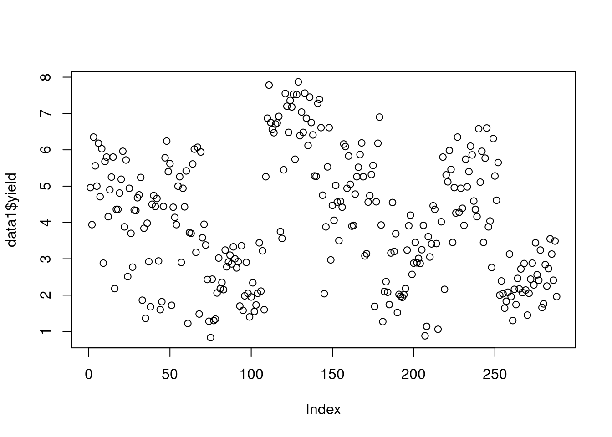

isle site block plot trt ears yield disease
1 Antigua DBAN B1 1 T111 42 4.96 TRUE
2 Antigua DBAN B1 2 T000 41 3.94 FALSE
3 Antigua DBAN B1 3 T311 49 6.35 FALSE
4 Antigua DBAN B1 4 T202 48 5.56 TRUE
5 Antigua DBAN B1 5 T111 45 5.36 FALSEGetting to Know Your Data in R
Learning Goals
At the end of this lesson, you should know:
- how to import data in R.
- several methods of data exploration in R.
- how to make cross tabulations of data.
- how to make histograms and pairwise plots in R.
Import a CSV file
This code read_csv() reads a CSV file named “caribbean_maize.csv” and assigns it to an object named “data1”.
The second line of code uses the “head” function to display the first 5 rows of the “data1” data frame. The View() will open the data set in new RStudio video where you can look up at the rows and columns.
data1 <- read.csv("data/caribbean_maize.csv")
View(data1)
Note
This data set has been imported and stored in an R session as a “data frame” (we will describe what that is later). This data frame only exists while your session is running. You can choose to save or export this object before closing your R session. Unless you purposely export this object and write over the original file, any changes you make to this object in an R session will not affect the original file that was imported.
There are several functions for enabling a quick examination of a data frame.
dim()gives the number of rows and columns;head()prints out the first 5 rows; andsummary()provides summaries of each column of a data frame.
dim(data1)[1] 288 8head(data1, 5) isle site block plot trt ears yield disease
1 Antigua DBAN B1 1 T111 42 4.96 TRUE
2 Antigua DBAN B1 2 T000 41 3.94 FALSE
3 Antigua DBAN B1 3 T311 49 6.35 FALSE
4 Antigua DBAN B1 4 T202 48 5.56 TRUE
5 Antigua DBAN B1 5 T111 45 5.36 FALSEsummary(data1) isle site block plot
Length:288 Length:288 Length:288 Min. : 1.00
Class :character Class :character Class :character 1st Qu.: 9.75
Mode :character Mode :character Mode :character Median :18.50
Mean :18.50
3rd Qu.:27.25
Max. :36.00
trt ears yield disease
Length:288 Min. :10.00 Min. :0.830 Mode :logical
Class :character 1st Qu.:36.00 1st Qu.:2.485 FALSE:143
Mode :character Median :41.00 Median :3.930 TRUE :145
Mean :40.43 Mean :4.033
3rd Qu.:45.00 3rd Qu.:5.400
Max. :69.00 Max. :7.870
NA's :1 NA's :1 Common Data Structures in R
Let’s consider how imported data sets are arranged into complex structures (that is, objects) that we can access and manipulate.
There are several data structures commonly used in R:
- vector
- data.frame
- matrix
- list
This lesson covers vectors and data frames, the two most common object types in R.
The vector
A vector in R is an object that contain one or more elements of the same type (types are covered later in this lesson). If we select a single column variable in data1, it will be returned to us as a vector.
Data in R data frames can be referred to by their column names using the notation dataframe$column_name:
Vector Exploration
- Ascertaining vector length
To find out how many items a vector has, use the length() function:
length(data1$site)[1] 288Note that this will also count missing values.
- Sorting vectors
To sort items in a vector alphabetically or numerically, use the sort() function:
sort(data1$yield) # sort a number
sort(data1$site) # Sort a character- Finding unique values in a vector
For ‘character’ variables with repeat information, sometimes it is more helpful to only look at unique values:
unique(data1$site)[1] "DBAN" "LFAN" "NSAN" "ORAN" "OVAN" "TEAN" "WEAN" "WLAN"- Counting unique values in a vector:
table(data1$site)
DBAN LFAN NSAN ORAN OVAN TEAN WEAN WLAN
36 36 36 36 36 36 36 36 This also works across multiple vectors:
table(data1$site, data1$isle)
Antigua
DBAN 36
LFAN 36
NSAN 36
ORAN 36
OVAN 36
TEAN 36
WEAN 36
WLAN 36- Vector summaries information
You can also look at summaries for individual vectors:
# mean
mean(data1$yield, na.rm = TRUE) # the na.rm tells R to ignore missing data[1] 4.033275# minimum
min(data1$yield, na.rm = TRUE)[1] 0.83# maximum
max(data1$yield, na.rm = TRUE)[1] 7.87# median
median(data1$yield, na.rm = TRUE)[1] 3.93# variance
var(data1$yield, na.rm = TRUE)[1] 3.021442# standard deviation
sd(data1$yield, na.rm = TRUE)[1] 1.73823# sum all yield data
sum(data1$yield, na.rm = TRUE)[1] 1157.55Accessing Vectors
You can access the vector items by referring to its index number inside brackets []. The first item has index 1, the second item has index 2, and so on: Multiple item can also be indexed: x[c(1,5)]. If an index position, it repeated, that item will be returned as often as it is called:
# look at one position
data1$yield[5][1] 5.36# look at multiple positions
data1$yield[c(2,5)][1] 3.94 5.36We can use this information to replace information in a vector
data1$yield[5] <- 5 #(original value was 5.36)Indexing accepts numeric/integer vectors, so you can use a sequence (3:10), or concatenated positions (c(1, 2, 5, 10)), or a combination of both (c(1:10, 13)).
Assigning Vectors to Objects
Vectors can be indexed and assigned to a new object.
yield_ <- data1$yield
site_ <- data1$siteThe columns called “yield” and “site” are returned as a vector and assigned to new objects.
These new objects can be examined and manipulated the same as if they were indexed (e.g. mean(yield, na.rm = TRUE), table(site_))
Creating New Vectors
We can also create new vectors from the original vectors
log_yield = log(data1$yield)
yield_pi = data1$yield*3.14
yield_sqrt = sqrt(data1$yield)
ear_sqr = data1$ears^2You can also add/multiply/subtract two columns of same data type and of same length. Let’s create a new vector named ‘var2’ as a product of ‘yield’ and ‘ears’ from data1.
yield_per_ear = data1$yield / data1$ears
yield_ear <- data1$yield * data1$earsR is naturally vectorized, which means that when you conduct a math operation on a vector, it will be repeated across the entire vector.
Any vector whose length matches the number of rows in a data frame can be added to that data frame. When we do this, we assume each is in the correct order. Since ‘yield_ear’ is directly from a vectorized operation done on ‘data1’, that assumption is correctly made.
data1$yield_x_ear <- yield_earWhen adding a new vector to a data frame that is multiple of the number of rows in the dataframe, that vector will be ‘recycled’ or repeated until it is as long as the data frame:
data1$new_isle = "Puerto Rico"
data1$sequence = c(1, 2, 3, 4)
data1$bad_order = c(1, 2, 3, 4, 5) # throws an errorError in `$<-.data.frame`(`*tmp*`, bad_order, value = c(1, 2, 3, 4, 5)): replacement has 5 rows, data has 288R also has a rich set of math operators available. You can learn more about using math operators here.
The Data Frame
A data frame is a collection of the vectors of same length. This is the most widely used and important data structure in R. Each vector is a single data type, but different vectors can be different data types (e.g. character or numeric) in a data frame. This is similar to a typical workbook you might open in Excel or another spreadsheet program.
In this example, data1 is a data frame which consists of different vectors (isle, site, block, etc) that are each their own data type (character, integer, numeric, logical).
A data frame has attributes for:
nrownumber of rowsncolnumber of columnscolnamescolumn namesrownamesrow names (if none are provided, R will generate integer row names starting at 1)
Check the number of rows and columns in a data frame:
nrow(data1)[1] 288ncol(data1); length(data1)[1] 11[1] 11dim(data1) # tells us row and column lengths in one command[1] 288 11rownames(data1) [1] "1" "2" "3" "4" "5" "6" "7" "8" "9" "10" "11" "12"
[13] "13" "14" "15" "16" "17" "18" "19" "20" "21" "22" "23" "24"
[25] "25" "26" "27" "28" "29" "30" "31" "32" "33" "34" "35" "36"
[37] "37" "38" "39" "40" "41" "42" "43" "44" "45" "46" "47" "48"
[49] "49" "50" "51" "52" "53" "54" "55" "56" "57" "58" "59" "60"
[61] "61" "62" "63" "64" "65" "66" "67" "68" "69" "70" "71" "72"
[73] "73" "74" "75" "76" "77" "78" "79" "80" "81" "82" "83" "84"
[85] "85" "86" "87" "88" "89" "90" "91" "92" "93" "94" "95" "96"
[97] "97" "98" "99" "100" "101" "102" "103" "104" "105" "106" "107" "108"
[109] "109" "110" "111" "112" "113" "114" "115" "116" "117" "118" "119" "120"
[121] "121" "122" "123" "124" "125" "126" "127" "128" "129" "130" "131" "132"
[133] "133" "134" "135" "136" "137" "138" "139" "140" "141" "142" "143" "144"
[145] "145" "146" "147" "148" "149" "150" "151" "152" "153" "154" "155" "156"
[157] "157" "158" "159" "160" "161" "162" "163" "164" "165" "166" "167" "168"
[169] "169" "170" "171" "172" "173" "174" "175" "176" "177" "178" "179" "180"
[181] "181" "182" "183" "184" "185" "186" "187" "188" "189" "190" "191" "192"
[193] "193" "194" "195" "196" "197" "198" "199" "200" "201" "202" "203" "204"
[205] "205" "206" "207" "208" "209" "210" "211" "212" "213" "214" "215" "216"
[217] "217" "218" "219" "220" "221" "222" "223" "224" "225" "226" "227" "228"
[229] "229" "230" "231" "232" "233" "234" "235" "236" "237" "238" "239" "240"
[241] "241" "242" "243" "244" "245" "246" "247" "248" "249" "250" "251" "252"
[253] "253" "254" "255" "256" "257" "258" "259" "260" "261" "262" "263" "264"
[265] "265" "266" "267" "268" "269" "270" "271" "272" "273" "274" "275" "276"
[277] "277" "278" "279" "280" "281" "282" "283" "284" "285" "286" "287" "288"colnames(data1) [1] "isle" "site" "block" "plot" "trt"
[6] "ears" "yield" "disease" "yield_x_ear" "new_isle"
[11] "sequence"
Tip
The rownames attribute can be set, but if it is not, it is automatically created within R from 1 to the total number of rows. Row names are a tricky attribute than many packages in R do not support. A function may toss out your row names without any warning!
In general, I do not recommend setting the row names attribute in data frames to anything other than the default values unless a package function specifically requires it.
Accessing items in a data frame
Earlier, we saw how we can use the $ notation to access any column (or vector) in a data frame. For example, to access the ‘block’ variable in our data1, you can use data1$block
A data set can also be indexed by numeric position. You can extract individual elements in a data frame by references the row and column position, my_dataframe[row, column], where the indexing begins at 1. So my_dataframe[1, 1] would extract the data point located in the first row and first column.
More examples:
- Extract the items located in the first 2 rows and 2 columns:
Visual of what we want:

This graphic is an overlay of green over blue, creating a dark teal color. The green represents rows indexed, the blue is columns indexed and the teal is the intersection between those two. If a color is not visible, that is because it is under the teal overlay.
data1[1:2, 2:3]- Extract the first two rows and all of the columns:

data1[1:2, ]When the column position is left empty, all columns are returned
- Extract the entire first column and all rows:

data1[ ,1]When the row position is left empty, all rows are returned.
- Extract the values located in the first 2 rows and first two columns:

data1[1:2, 1:2]- Return everything except the third columns

data1[ ,-3]- Return everything except the first 2 rows:

data1[-(1:2), ]Value replacement
There are likely to be moments when you want to replace values in a data frame or vector with something else. You can do that with indexing and variable assignment.
Let’s image that we want to assign the third value in the sixth column as NA. First, we index the that position, then we assign a value to it (NA in this case):
data1[1, 8] <- NANA is a reserved word in R, hence it does not need to be quoted.
Creating a new data frame
We can create an example data frame using the new vectors created earlier in this lesson:
new_df <- data.frame(log_yield, ear_sqr )
head(new_df) log_yield ear_sqr
1 1.601406 1764
2 1.371181 1681
3 1.848455 2401
4 1.715598 2304
5 1.609438 2025
6 1.821318 2116
Brief notes on naming
While duplicate column names in a data frame are allowed, they are not advised and may throw an error during data import, depending on the import function used.
Also, it is not recommended that objects be named after existing functions since it can cause unpredictable behavior with R. Over time, you will learn of these conflicts. Two examples that new users often trip over are data and df, which are existing functions in R.
Vectors and data frames are two major object types in R, but there are other types that provide different functionality. You can learn more about them here.
Data Types
Recall that we can look at the overall structure of a data.frame with str():
str(data1)'data.frame': 288 obs. of 11 variables:
$ isle : chr "Antigua" "Antigua" "Antigua" "Antigua" ...
$ site : chr "DBAN" "DBAN" "DBAN" "DBAN" ...
$ block : chr "B1" "B1" "B1" "B1" ...
$ plot : int 1 2 3 4 5 6 7 8 9 10 ...
$ trt : chr "T111" "T000" "T311" "T202" ...
$ ears : int 42 41 49 48 45 46 42 44 42 44 ...
$ yield : num 4.96 3.94 6.35 5.56 5 6.18 4.71 6.03 2.88 5.68 ...
$ disease : logi NA FALSE FALSE TRUE FALSE TRUE ...
$ yield_x_ear: num 208 162 311 267 225 ...
$ new_isle : chr "Puerto Rico" "Puerto Rico" "Puerto Rico" "Puerto Rico" ...
$ sequence : num 1 2 3 4 1 2 3 4 1 2 ...Common Data Types
By using the str() command above, we noticed the object types in this data set. The common object types in this data set includes:
- Yield and ears are shown as ‘numeric’ and ‘integer’ (integer is a subtype of ‘numeric’).
- Variables such as site, and trt are class ‘character’.
- The variable ‘disease’ is logical, meaning it can only take TRUE or FALSE values (or 1/0 values)
You can also check the class of each variable separately by using class() function.
class(data1$block)[1] "character"class(data1$yield)[1] "numeric"class(data1$disease)[1] "logical"Data Type Conversion
Data type of individual variables can be ‘coerced’ (forced) into different types. For example, plot is a numeric variable, as.character() converts it to a character variable.
data1$plot <- as.character(data1$plot)
data1$plot <- as.numeric(data1$plot) #converting plot back to numericFactors
A character variable can be converted to the factor variable. Factor is a special type of variable used largely for linear modelling. It look like a character variable and it has pre-defined levels.
data1$block <- as.factor(data1$block)
class(data1$block) # check class of the block[1] "factor"levels(data1$block) # existing levels[1] "B1" "B2" "B3" "B4"nlevels(data1$block) # predefined levels[1] 4Factors are challenging to work with. They are required for linear modelling and hence that is we teach them. Nevertheless, they are tricky beasts with funny conventions (run typeof(data1$block) to see what we mean). We don’t have any additional lesson to refer to, but if find yourselve working with factors, take some time to read the documentation for the function factor() (run ?factor in the console), and if you must really get serious about factors, see the packge forcats for further resources.
More information on different data types in R and how to convert between them can be found here.
Base Plotting
While R can make sophisticated and publication quality charts, it can also be used for quick data visualizations. We usually use a set of functions that automatically come with an R installation, ‘base functions’. ‘Base plotting’ refers to functions that are part of base R used for plotting.
Here we are creating a histogram to look at data distribution of the ‘yield’ variable from data1 using a hist() function.
hist(data1$yield)
The boxplot() function in R is used to create a boxplot for the selected variables. In the code chunk below, a boxplot of yield for each replication is created, the xlab and ylab shows the title of x-axis and y-axis, respectively. The main=, provides the title to the graph.
boxplot(yield ~ trt, data = data1,
main = "Yield Graph",
xlab = "Rep",
ylab = "Yield")
Pairwise plots are also useful ways to visualize information:
plot(data1$ears, data1$yield) 
Point plots can also be done a single variable:
plot(data1$yield)
The x-axis, “Index”, is the row index, i.e. the indexed position along the vector.
Barplots are also handy. data1 is suited for a barplot, but we can make a data set better for a barplot:
data1$yield_categories <- cut(data1$yield, 5) # break yield into 5 groups
totes <- as.data.frame(table(data1$yield_categories)) # count how many observations are in each group and convert to a data frame
totes # print object Var1 Freq
1 (0.823,2.24] 60
2 (2.24,3.65] 69
3 (3.65,5.05] 71
4 (5.05,6.46] 58
5 (6.46,7.88] 29barplot(Freq ~ Var1, data = totes)
Note
Often, base plotting is only used for quick visualizations and it is not worth the effort to make them look pretty. However, they can be made publication quality. Search ?par to learn more about how to adjust and improve upon these plots.
later in this workshop, we will absolutely be covering how to make publication quality plots with ggplot2 and related extensions.
Putting it all together
Check the environment pane. These are the object you created during the session. This is where you will see all objects created, unless you have choosen to render the objects invisible by starting their object names with a ., a period.